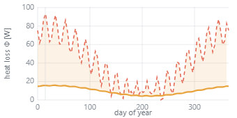

basement-heatloss-earth-vs-air

{"preset":"basement","panel":"Annual heat loss","marker":"~day 15 (winter)","reductionFactor":0.244}
Annual heat loss, basement (corner-of-cellar cross-section). Earth (buried): mean 9.98 W, swings 4.0-15.9 W, damped + lagged by the soil. Air (same cellar exposed): mean 40.85 W, swings 0.3-93.3 W, tracks the outdoor wave directly. Reduction earth/air = 0.24 -> soil cuts the annual-mean loss to 24%. Curves cross in summer (the ~2-month soil lag). By superposition, never a re-solve.
- ✓ both-curves-drawn — earth (amber) 383 px + air (red) 1909 px both present
- ✓ reduction-factor-<1 (soil insulates) — earth/air mean loss = 0.244 (earth 9.98 W < air 40.85 W)
- ✓ air-swings-more (undamped) — air swing 93.0 W ≫ earth swing 11.9 W